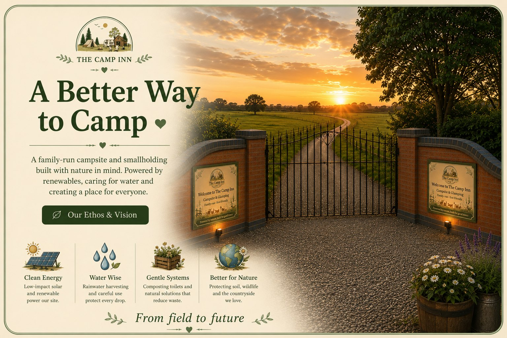

Grass Tent Pitch
Spacious grass pitches with stunning countryside views.
- Up to 6 people
- Dogs included
- Awnings & pup tents included

A family-run campsite and smallholding built with nature in mind. Space to breathe, explore and make memories — for everyone.

 Good Times.
Good Times.Whether it's a tent, a tourer or something a bit more luxurious, we've got the perfect spot for you.
Spacious grass pitches with stunning countryside views.

Grass pitches with 16A electric hook-up.


All the comforts you need for a relaxing stay.


A cosy countryside escape with everything you need.

 Highland
Highland Alpaca
Alpaca Meet the
Meet the Farm
Farm Fresh Eggs
Fresh Eggs
Food &
Clean, comfortable, practical and with a little bit of character. Individual toilets and showers, a dedicated family bathroom and The Camp Inn café & bar.


Opening 28 March 2027